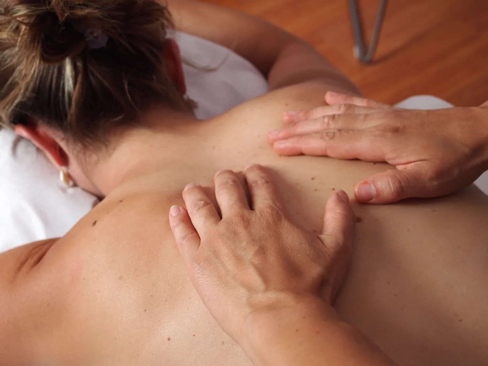

Ejercicios para aliviar el dolor de cuello, cervical o cervicalgia
Ejercicios Generales: INDICACIONES: Realizar ejercicios a tolerancia del paciente. Idealmente: - Realizar 1 a 2 series de 5-10 repeticiones de cada ejercicio, y mantener…
Ver rutina →